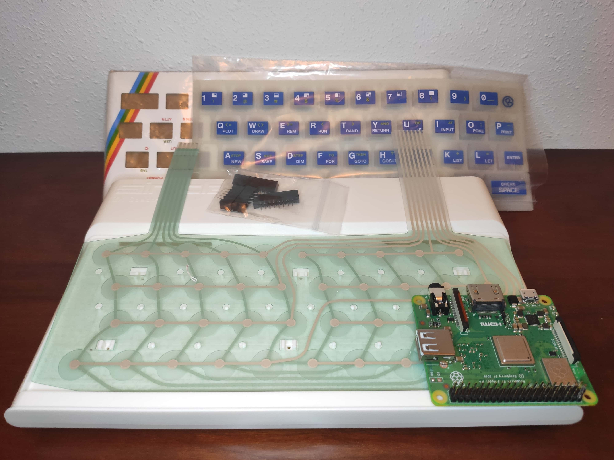
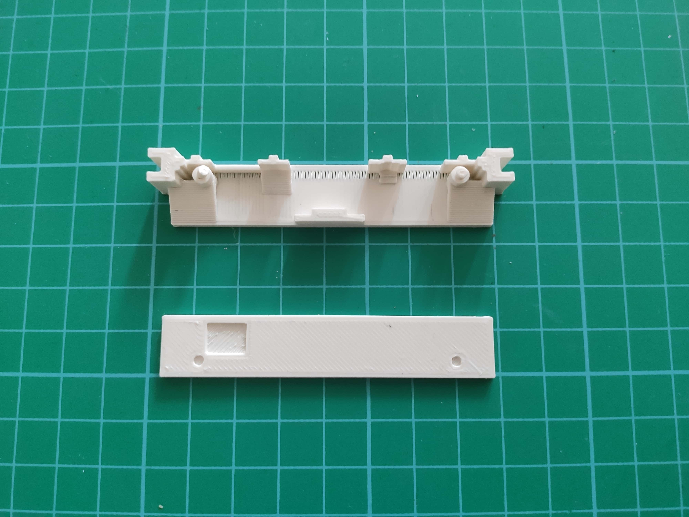
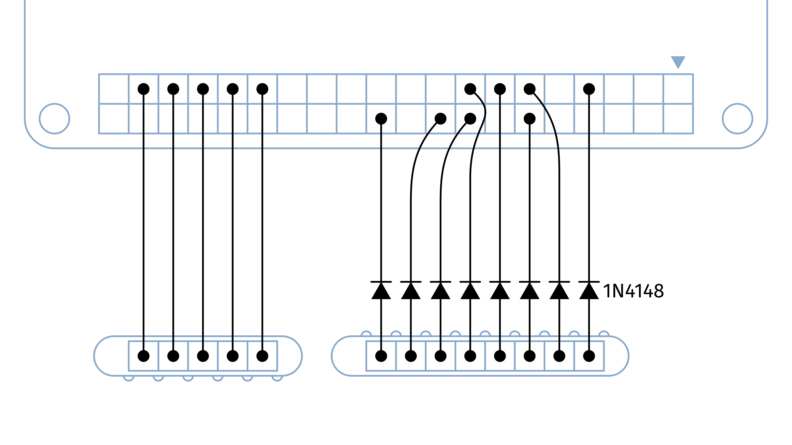
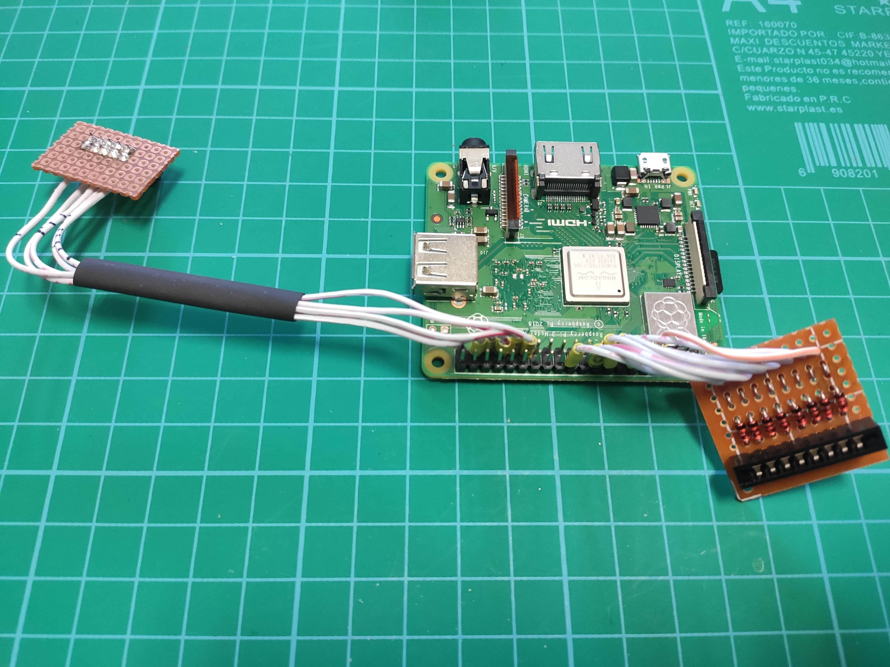
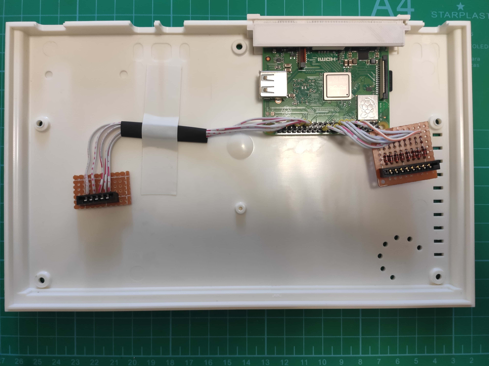
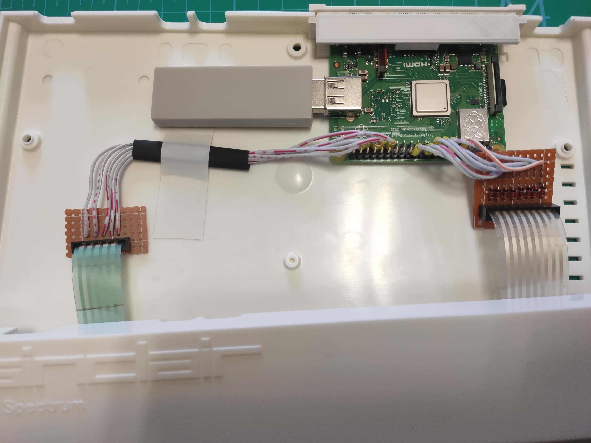
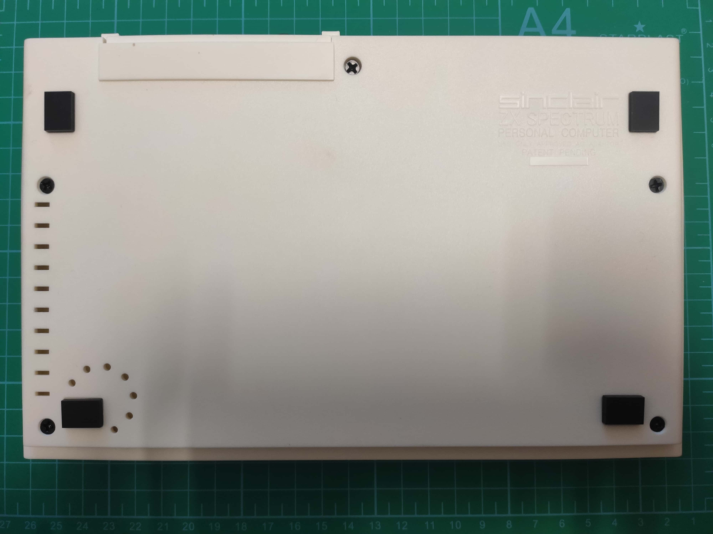
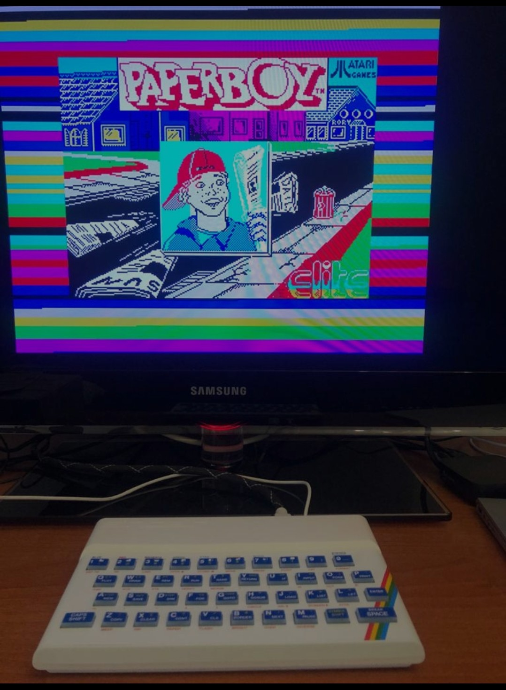

Carcasa réplica Zx Spectrum + ZXBaremulator + Raspberry Pi 3A+

Llevaba tiempo con ganas de hacer este proyecto. De hecho tenía todos los materiales comprados hacía tiempo pero lo fuí demorando porque aún no tenía nada claro como sujetar de un modo elegante y seguro la raspberry pi en el interior del Spectrum. Pero hace poco ví en Youtube varios vídeos de David programa y en uno de ellos se muestra como hizo un proyecto como este, compartiendo unas magníficas piezas en formatos STL y OpenSCAD del soporte de la Raspberry Pi 3A+ para el spectrum.</p>
¿De qué se trata?
De ejecutar el emulador bare-metal ZXBareMulator, creación de José Luis Sánchez, en una Raspberry Pi. Un programa bare-metal es aquel que no necesita cargar primero un sistema operativo para funcionar. La carga es instantánea y emula maravillosamente el ZX Spectrum 48K/128K/+2A.
Haciendo uso de una carcasa de Spectrum 48K y teniendo su teclado operativo, conectando su membrana al GPIO de la RPi, la sensación que se tiene es la de tener entre las manos un verdadero gomas :) .
Al final he montado una Raspberry Pi 3A+ dentro de la carcasa de un Spectrum, conectando la membrana del teclado al GPIO del RPi, para ejecutar el emulador bare-metal ZXBareMulator de José Luis Sánchez y tener un Spectrum con los juegos en la tarjeta de memoria y la posibilidad de conectar a un monitor por HDMI.
Pasos realizados en imagenes

Aquí podéis ver la carcasa réplica del gomas, la membrana, el teclado, la chapa superior y los conectores de la membrana. Todos estos productos los compré en su día en retocables.es

Detalle de las piezas diseñadas por David para sujetar la RPi en la carcasa del Spectrum, impresas en 3D.
Fuente piezas: https://github.com/davidprograma/ytc/tree/master/16-ZxSPiCTRUM/SPiCTRUM-RPi-backplanes

Esquema de conexionado. Fuente imagen: https://github.com/davidprograma</p>

Siguiendo el esquema de conexionado GPIO, que facilita David en su github, procedí a conectar 5 pines GPIO al conector de 5 pines y 8 pines GPIO al conector de 8 pines con los diodos 1N4148, montando dos placas pequeñas y cableando.</p>

Posicionando todo en el interior de la carcasa.

Conectadas las fajas de la membrana a sus correspondientes conectores. También le he conectado en el puerto USB una Magic-Ns ya que esta está soportada en ZXBareMulator, con lo que puedo hacer uso de una mando de PS4 :)

Y finalmente cerramos la carcasa y ponemos todos los tornillos.

La versión que uso de ZXBaremulator es la 3.2.
Características destacadas:
- Permite conectar un teclado real de Spectrum 48k, Spectrum+ o Spectrum 128K (pero no los +2a/+3) a la Raspberry PI vía GPIO.
- Tiene soporte para el adaptador USB MAGIC-NS de Mayflash. Con él se pueden conectar un montón de mandos, tanto por cable como por Bluetooth. El adaptador debe estar en modo DirectInput (LED de color azul).
- Se ha acelerado un poco el método de carga de las cintas virtuales.
Me encanta como ha quedado!! todo funciona perfectamente.
Fuentes:
ZXBareMulator
YouTube David programa
Explore more like this

Comments